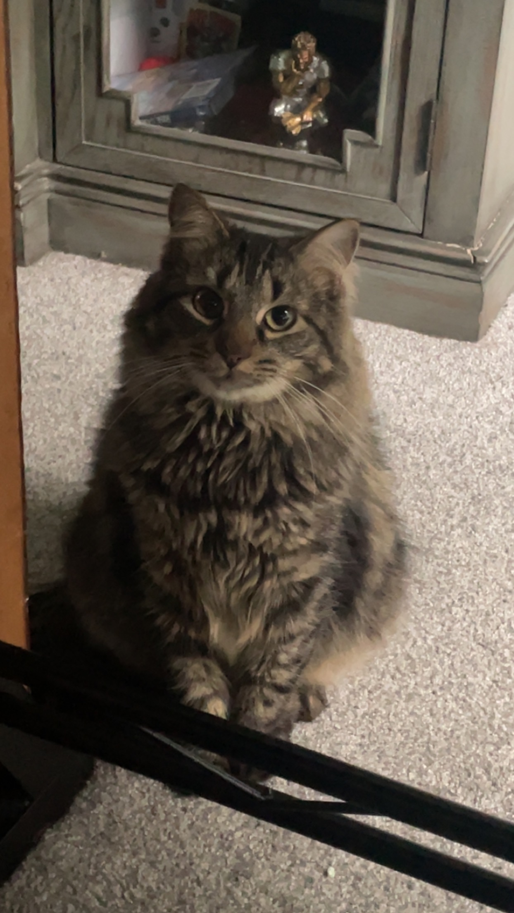

My name is David punchak. I am 19 years old, my birthday is december 21, 2004. I live at home with my family. I live with my mom, dad, and brother. Hopefully i can find my own place. My brothers name is Josh and he is 17. We also have 2 cats that i love so much. There names are Casper and Piper. It was my idea to get the cats so i have full responsbilty over them. I enjoy taking care of them. I dont have much computer programing experance, i took a class in the 8th grade and another class in 12 grade. A lot of the information that we are learning is all new to me and i hope i can be able to learn it as fast as other people. I have enjoyed coding in my 8th and 12th grade classes, i really like the hardware more than the software but i know you need both. I hope one day i can have my own computer repair store, or somthing like that.
This is casper
Photo of me